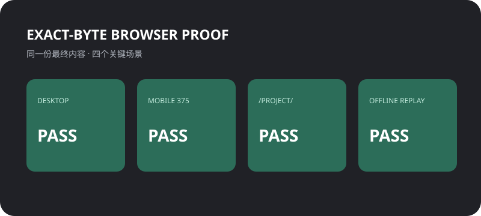

本次结论
笔记正文、样式、图表和跨页章节全部保存在同一个文件包内。RealityCheck 会冻结最终字节、核查内部引用，并用禁用 JavaScript 的真实浏览器完成复验。

交付内容
- 根目录可直接部署的
index.html； - 公开但不包含源码摘录的双语证明报告；
- 最终 ZIP 的 SHA-256 sidecar 与本地技术报告；
- 遇到脚本、外联资源、缺失附件或歧义入口时，明确降级为工作副本。
REALITYCHECK · VERIFIED PUBLISH DEMO
这份自包含示例展示一篇 AI 辅助生成的 HTML 笔记，如何在桌面、手机、项目子路径和无外部运行依赖的场景中保持可读。
笔记正文、样式、图表和跨页章节全部保存在同一个文件包内。RealityCheck 会冻结最终字节、核查内部引用，并用禁用 JavaScript 的真实浏览器完成复验。

index.html；